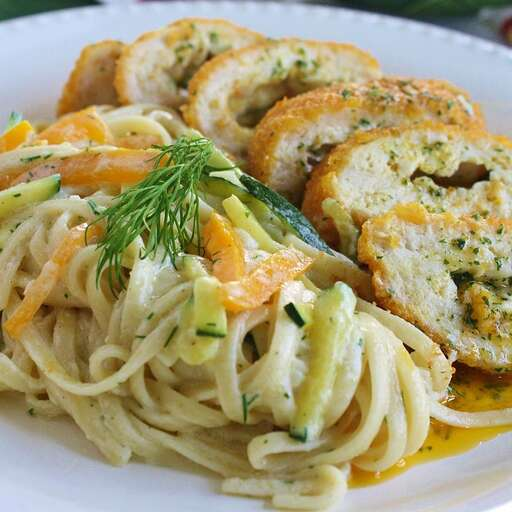

Home
Spaghetti

Description
Here's a simple recipe to make yourself a great spaghetti, perfect for the spring season.
Ingredients
- 8 ounces spaghetti
- 2 tablespoons butter
- 3 large carrots, julienned
- 1 large zucchini, julienned
- 2 teaspoons minced garlic
- 3⁄4 cup heavy cream
- 3⁄4 cup grated Parmesan cheese
- 1 tablespoon chopped fresh dill
Steps
- Bring a largee pot of lightly salted water to a boil. Cook spaghetti in boiling water until tender yet firm
to
the bite, 8 to 10 minutes. Drain and set aside.
- Melt butter in a large skillet over medium heat. Sauté carrots, zucchini, and garlic in hot butter until
tender. Stir in heavy cream, Parmesan cheese, and dill. Cook and stir until thickened. Add cooked spaghetti
and mix until evenly coated.